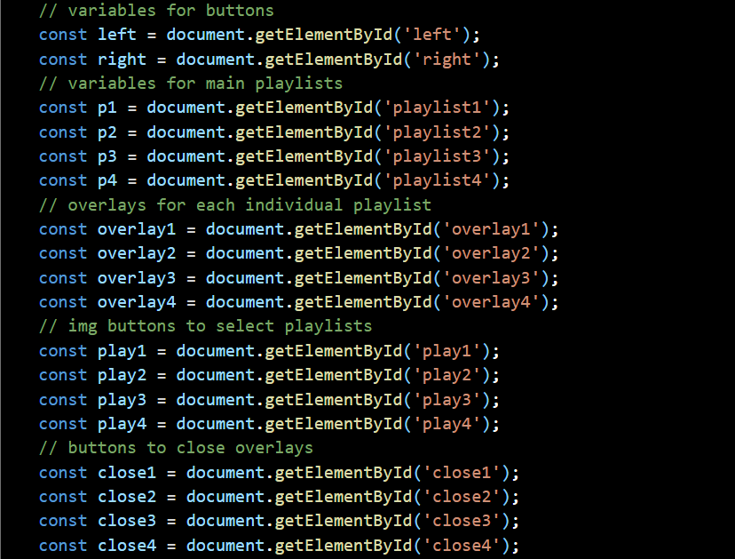
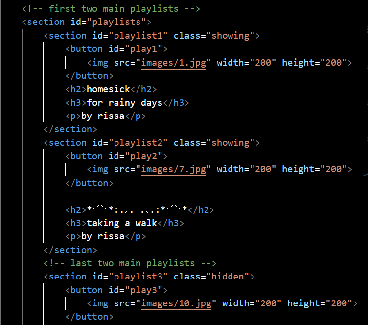

Functional Diagram
The person who reviewed my code is one of the advisors for the club that I am involved in. They are proficient in JavaScript, HTML5, and CSS as they did a lot of front-end development during undergrad. They are currently a PhD student and a TA in the CS department.
I learned a lot through our discussion. I was told that my overall approach is very well done and that I have a solid foundation for the structure and layout of my code. I was told that I am doing everything correctly but also in a tedious manner which makes it harder for myself. I am technically "hard coding" my project when it can be much more simple if done correctly.
I have my code structured in the way that I write out every single playlist and its properties which is a good start, but I was advised to make a class and pull directly from this class in JavaScript instead of directly putting it into my HTML file. Within this class I can create objects, even an array of objects to hold the data for my playlists. This way it is easier to grab and insert my playlists when necessary.
Right now I have my code written in the way that my HTML file contains all of the data I need. The cleanest approach is using JavaScript to hold all of this data in a class and have the HTML file pull from my JavaScript file when prompted to. In conclusion, I should use Javascript more in this project as it makes the functionality better.